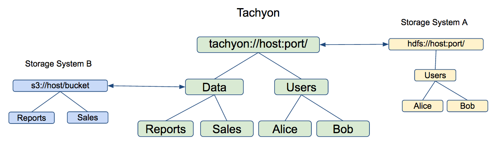

Unified and Transparent Namespace
Tachyon enables effective data management across different storage systems through its use of transparent naming and mounting API.
Transparent Naming
Transparent naming maintains an identity between the Tachyon namespace and the underlying storage system namespace.

When a user creates objects in the Tachyon namespace, they can choose whether these objects should
be persisted in the underlying storage system. For objects that are persisted, Tachyon preserve the
object paths, relative to the underlying storage system directory in which Tachyon objects are
stored. For instance, if a user creates a top-level directory Users with subdirectories Alice
and Bob, the directory structure and naming is preserved in the underlying storage system (e.g.
HDFS or S3). Similarly, when a user renames or deletes a persisted object in the Tachyon namespace,
it is renamed or deleted in the underlying storage system.
Furthermore, Tachyon transparently discovers content present in the underlying storage system which
was not created through Tachyon. For instance, if the underlying storage system contains a directory
Data with files Reports and Sales, all of which were not created through Tachyon, their
metadata will be loaded into Tachyon the first time they are accessed (e.g. when a user requests to
open a file). The data of file is not loaded to Tachyon during this process. To load the data into
Tachyon, one can set the TachyonStorageType to STORE when reading the data for the first time or
use the load command of the Tachyon shell.
Unified Namespace
Tachyon provides a mounting API that makes it possible to use Tachyon to access data across multiple data sources.

By default, Tachyon namespace is mounted onto the directory specified by the
tachyon.underfs.address property of Tachyon configuration; this directory identifies the
“primary storage” for Tachyon. In addition, users can use the mounting API to add new and remove
existing data sources:
bool mount(String tachyonPath, String ufsPath);
bool unmount(String tachyonPath);
For example, the primary storage could be HDFS and contains user directories; the Data directory
might be stored in an S3 bucket, which is mounted to the Tachyon namespace through the
mount(tachyon://host:port/Data, s3://bucket/directory) invocation.
Example
In this example, we will showcase the above features. The example assumes that Tachyon source code
exists in the ${TACHYON_HOME} directory and that there is an instance of Tachyon running locally.
First, let’s create a temporary directory in the local file system that will use for the example:
$ cd /tmp
$ mkdir tachyon-demo
$ touch tachyon-demo/hello
Next, let’s mount the directory created above into Tachyon and verify the mounted directory appears in Tachyon:
$ ${TACHYON_HOME}/bin/tachyon tfs mount /demo /tmp/tachyon-demo
> Mounted /tmp/tachyon-demo at /demo
$ ${TACHYON_HOME}/bin/tachyon tfs lsr /
... # should contain /demo but not /demo/hello
Next, let’s verify that the metadata for content not created through Tachyon is loaded into Tachyon the first time the content is accessed:
$ ${TACHYON_HOME}/bin/tachyon tfs ls /demo/hello
... # should contain /demo/hello
Next, let’s create a file under the mounted directory and verify the file is created in the underlying file system:
$ ${TACHYON_HOME}/bin/tachyon tfs touch /demo/hello2
> /demo/hello2 has been created
$ ls /tmp/tachyon-demo
> hello hello2
Next, let’s rename a file in Tachyon and verify the file is renamed in the underlying file system:
$ ${TACHYON_HOME}/bin/tachyon tfs mv /demo/hello2 /demo/world
> Renamed /demo/hello2 to /demo/world
$ ls /tmp/tachyon-demo
> hello world
Next, let’s delete a file in Tachyon and verify the file is deleted in the underlying file system:
$ ${TACHYON_HOME}/bin/tachyon tfs rm /demo/world
> /demo/world has been removed
$ ls /tmp/tachyon-demo
> hello
Finally, let’s unmount the mounted directory and verify that the directory is removed from the Tachyon namespace, but its content is preserved in the underlying file system:
${TACHYON_HOME}/bin/tachyon tfs unmount /demo
> Unmounted /demo
$ ${TACHYON_HOME}/bin/tachyon tfs lsr /
... # should not contain /demo
$ ls /tmp/tachyon-demo
> hello